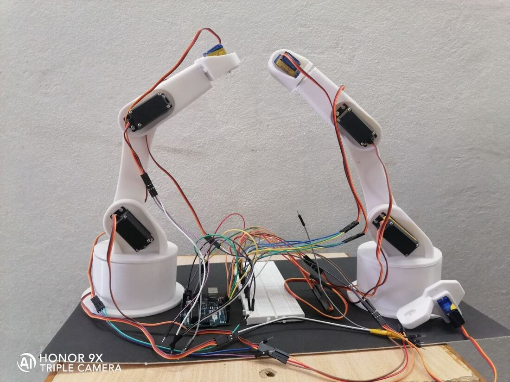
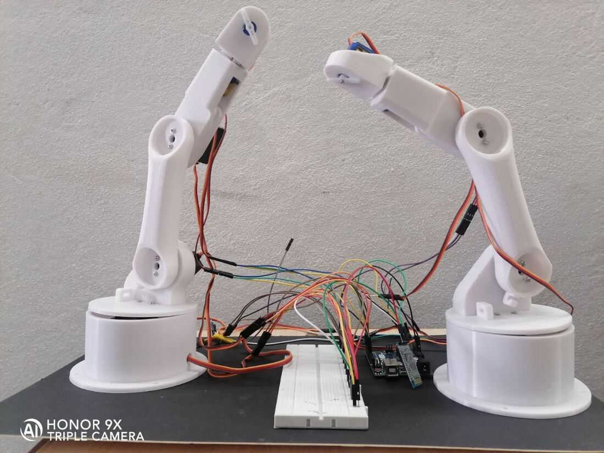
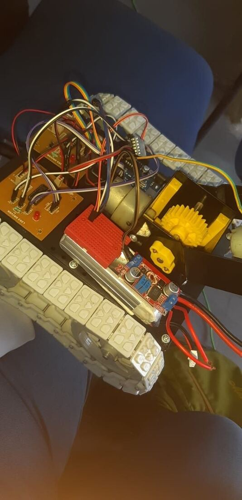

14 / MANIPULATION
Robotic Arm
A three-degree-of-freedom arm with a claw gripper, built around the tasks industrial arms perform.
- Role
- Build and integration
- Context
- Independent build, Nov – Dec 2021
- Tools
- Servo actuation, 3D-printed linkages, claw gripper, Arduino
- Scope
- Three degrees of freedom with a gripper at the head
- Output
- An arm that positions and grips within its working envelope
- Skills
- 3-DOF kinematics
- Servo actuation
- Gripper design
- Arduino
- 3D-printed linkages
A robotic arm with three degrees of freedom and a claw grip at its head. Arms of this type serve assembly work in the automotive industry, assist in medical settings, and in a much larger form are used on the International Space Station.
The arm runs on Arduino, with servos driving each joint and the gripper. The value of the build was in the kinematics: working out how three joints combine to place the gripper anywhere in the working envelope.



3 degrees of freedomClaw gripperArduino driven
3-DOF kinematicsServo actuationGripper designArduino